応声教院/静岡県菊川町
「東海随一の水子供養」こんな看板を見たひにゃあその矢印に従わざるを得ない私なのである。
で、応声教院。田んぼの中の小高い丘のうえに建つその寺は役者がずらりと揃った珍寺だった。
道祖神がズラリと並ぶ参道（といっても農道のような小道だが）を抜け階段を登るとそこには重文の朱塗りの山門がそびえている。
ここは斉衞2（855）年に開かれた寺で、その後法然が東海における浄土宗の拠点として現在の寺名をつけて、現在に至るという古刹なのだが、そんなムードも山門でお終い。境内は数々のオブジェがあり異様なムードに覆い尽くされている。
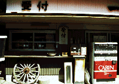
ジャンクショップかと見まがう程モノが散乱した受付の前を通ると、まず目に付くのは大きな酒樽。その中にはワンカップを持った地蔵さんが。タイトルは「のんべえ地蔵」、大酒飲みだった人への供養に建てたらしい。いきなり直球勝負。
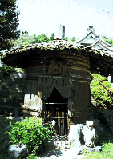 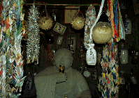
で、その左に目をやれば、池には蛙の像がありそれに小便小僧が水をかけている「蛙の面に小便」。これまた直球ギャグ。その他、妙な河童や地蔵の像のオンパレード、韓国のチャンスンまでありました。
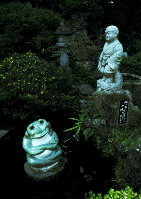 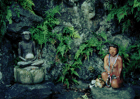
あと西国巡礼者の金剛杖に弘法大師を刻んだものが1万体並んでいる「子授け大師堂」も。
これらのマッドテイスト溢れるモノを眺めつつ本堂の裏手へまわると、そこは水子供養エリアである。
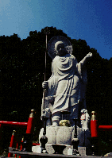 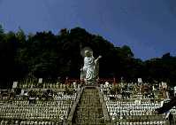 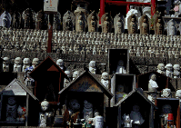
雛壇に並べられた小さい水子地蔵の一番上には、石像では日本一と云われる水子地蔵が体をくねらせて立っている。・・・気持ち悪い。さらにキモチワルムードを盛り上げてくれるのが雛壇の手前に造られているナゾのミニ庭園である。柵で円状に囲まれた中に様々な石像がみっちりと配置されており、何だか石像によるストーンサークルみたいである。何を意図して造られたのか良く解らないだけに無気味である。多分なにも考えて無いと思うけどね。
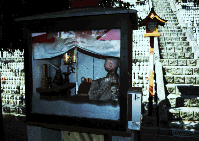 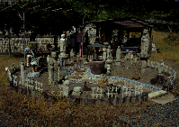
水子の供養はセルフサービスで、という訳でコイン式読経機がある。100円玉を入れてみると箱の中の小坊主人形が木魚を叩き、お経が流れるという仕組み。水子だけに子供の声で読経しているんだが、これが結構下手。いやいや読経できるだけ大したものか。ま、あんまり有り難くは無い感じだ。
で、横をみるとなぜかロダンの「考える人」のレプリカ。ロダンと水子地蔵のツーショットが見られるのは世界広しといえどもココだけだぞ、きっと。
後日調べてみるとこの寺、どうやら龍の鱗なるモノを持っているらしい。やっぱ年期のはいった筋金入りの珍物寺は持ってるモンが違うよなあ。
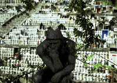
1998.9
珍寺大道場 HOME